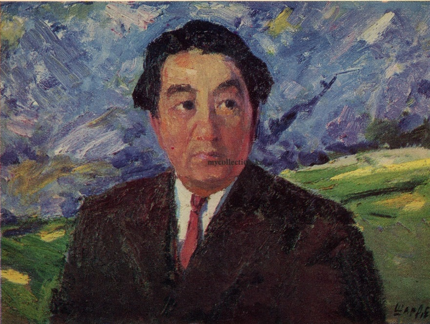

Жанатай Шарденов

Детали:
р. 1927, Казахстан, Каскелен

Жанатай Шарденов, Горные Эхо, 1984, 200 см x 150 см, Масло на холсте.
Жанатай Шарденов: Мастер Казахского Пейзажа
Жанатай Шарденов известен своими завораживающими изображениями разнообразных пейзажей Казахстана. Его работы часто подчеркивают величественные горы, бескрайние степи и тонкую игру света и тени, которые оживляют эти природные ландшафты.
Мастерство Шарденова в использовании кисти и палитры цветов известно своей выразительностью, передающей как спокойствие, так и величие казахской природы.